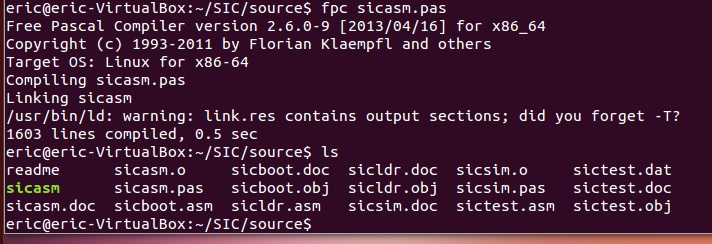
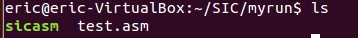
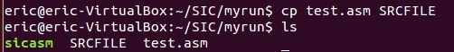
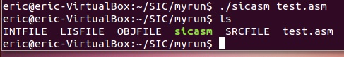
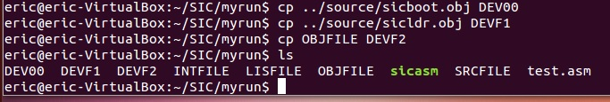
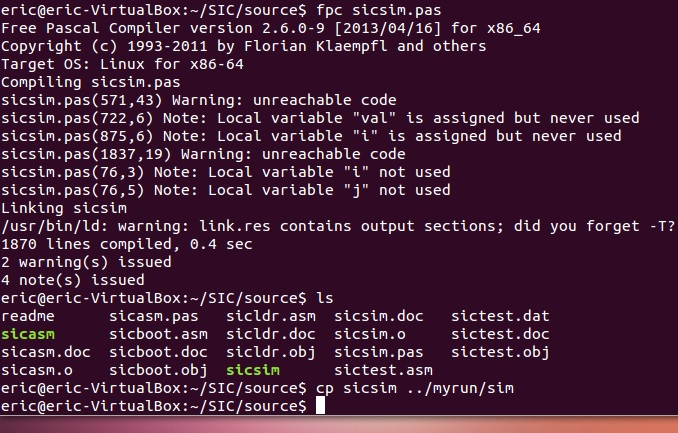
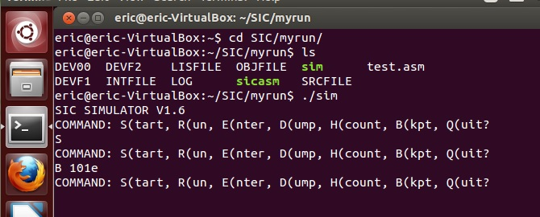

在學習如何使用SIC simulator之前，首先要先具備一些基本工具：pascal compiler, SIC source
COMPILE

我之後要測的程是在別的資料夾，在這裡我先把東西都丟到我將來要操作的資料夾裡 (test.asm是我自己寫好的程式碼)

sicasm就變成可執行檔，當你要compile SIC程式碼時，先把你寫好的程式複製到SRCFILE裡 面

再執行sicasm，後面接的參數是你寫好的程式碼檔案名稱。

執行完後會出現OBJFILE，LISFILE，INTFILE這3個檔案
DEV00放入sicboot.obj
DEVF1放入sicldr.obj
DEVF2放入你自己寫完編譯好的obj檔
DEVF3是你要輸入到你的程式裡面的input file(程式沒有要輸入資料的話不用複製)

接下來只要再將sicsim.pas編譯程可執行檔

就能夠使用simulator了
